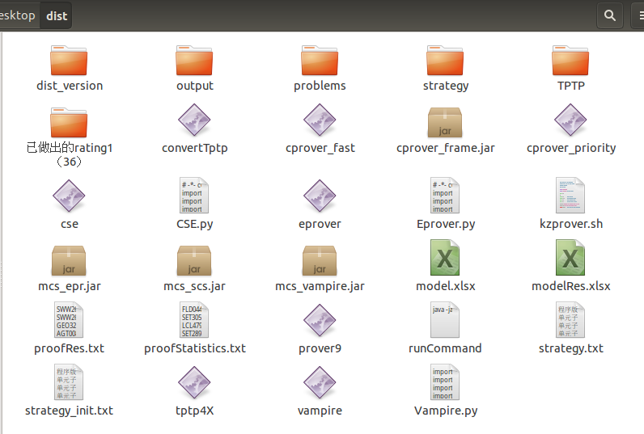

“Work. ”
前言
进行此项内容前，请确保已经完成环境的配置。
相关网站：TPTP官网
1、实验前准备
准备条件
拷贝好dist文件夹，确保内部具有正确的文件

problems文件夹中存放问题以及Axiom公理集，测试完output中会存放生成相关文件，strategy中存放策略集合，proofStatistics.txt内存放所有问题的证明时间。
在dist文件夹内打开命令行窗口，使用ls命令，检查文件是否具有可执行权限：
cse,eprover,tptp4X,以及相关jar包。
若没有权限，使用如下命令对文件授予权限：chmod +x 文件名
使用./eprover --verson或./vampire --verson查看对应软件的版本
使用命令行版本测试时，将cse替换为自己导出的cse
替换eprover的版本时，要将eprover和mcs_eprover.jar同时替换才正确。
3.1以上的版本的Eprover会出现异常，则需要进行以下操作（重新打开一个终端，输入下述指令）：
|
|
然后使用kill指令将前三个icdc进程杀死
拓展(输入./vampire –ignore_missing on –mode casc -t 300 +一个问题的绝对路径，就能得到下面这样的证明搜索路径和时间，这样子只能测单个的原始时间)
带界面版本测试命令
在虚拟机内：
- (1)启动Terminal;
- (2)切换⽬录：cd Desktop/dist;
- (3) 执⾏命令：
./kzprover.sh，脚本没有可执⾏权限时，sudo chmod +x kzprover.sh; - (4) 启动时把单组合模式改为多组合模式，其他不需要改.
命令行版本测试命令
测试CSE和Eprover融合系统命令：
|
|
测试CSE和Vampire融合系统命令：
|
|
单独测试CSE系统命令：
|
|
其中260 20 为时间参数 如果那两个数值变为300 0，意味着是原始测出来的数据， 前一个数值代表eprover测的时间，后一个数值代表CSE测的时间， 300秒减去前两个数值所剩下的时间也是eprover参与的
2、代码相关逻辑
基础代码修改项
| 必改项 | ||
|---|---|---|
| 2217 | Resolution.cpp | for(int i=0;i |
| 使用776行的main函数 | 替换原始800行的main函数 | |
| 验证检查 | 原始代码 | 修改后，会生成run文件 |
| Prover.cpp 319 |
if(1){ FileOp::delRunFiles(); } |
if(0){ FileOp::delRunFiles(); } |
| 选改项 | ||
| main.cpp | debug | 编译release |
| 216 | #define newTriDebug | //#define newTriDebug |
| 755 | //child = fork(); if (0 == 0) |
child = fork(); if (child == 0) { |
| 生成cse文件 |
部分演绎框架
| CSE1.3_pre | 文件 | 位置 | 方法名 |
|---|---|---|---|
| 较优子句 | TriAlg.cpp | 345 | GenerateTriByRecodePath |
| 优化演绎路径 | TriAlg.cpp | 1832 | GenerateTriByRecodePathLROptimalProofSearch |
| 充分使用子句 | TriAlg.cpp | 2983 | GenerateTriByRecodePathLR |
| 单元子句排序规则 | SortRule.h | 168 | |
| 候选子句排序 | Resolution.cpp | 4833 | |
| 合一算法 | Unify.cpp | 320 | LitMgu |
| 预处理 | Resolution.cpp | 3183 |
构建标准矛盾体思想
| 方法 | 从左到右构建 | 从右到左构建 |
|---|---|---|
| 思想 | 选择了候选子句集的文字， 在决策文字集上遍历文字判断是否互补 |
选择了决策文字集上的文字， 在候选子句集中遍历子句，再遍历文字是否互补 |
| 代表算法 | 充分使用子句，优化演绎路径 | 较优子句 |
标准矛盾体：
决策文字及其下拉文字，但不包含对角线最后一位
文字变元输出
|
|
3、融合系统E3.1以上版本卡住解决方法
解决方法1：原始方法
新打开一个命令行窗口输入以下指令：
|
|
使用kill指令将前三个eprover的进程杀死。
解决方法2：自编sh脚本方法
新建一个名为kill.sh的文件，其内代码编写如下：
|
|
其原理如下：
- 脚本检测dist路径下的proofStatistics.txt文件的修改时间，若超过7分钟，则杀死名为eprover的所有进程。
- 若proofStatistics.txt文件的修改时间，未超过7分钟则等待7分钟后进入下一轮循环
- 若未检测到proofStatistics.txt文件，则休眠7分钟。
使用规则：
- 将kill.sh文件置于dist文件夹内；
- 使用
chmod +x kill.sh授予权限； - 在命令窗口使用
./kill.sh启动脚本； - 脚本会在dist文件夹内生成kill-log.txt日志文件。